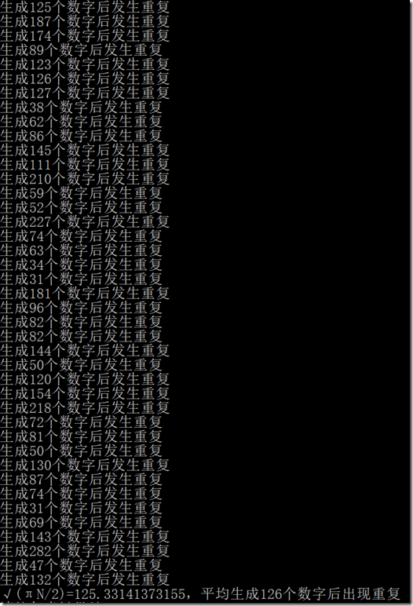

© 2019 《算法（第四版）》C# 题解 | Provided By 沈星繁
搜索解答
目前已完成到 2.5
1.4.44
上次更新：2019-02-11
题目
1.4.44
生日问题。
编写一个程序，从命令行接受一个整数 N 作为参数并使用 StdRandom.uniform() 生成一系列 0 到 N-1 之间的随机整数。
通过实验验证产生第一个重复的随机数之前生成的整数数量为 ~√(πN/2)。
解答
每生成一个随机数都和之前生成过的随机数相比较。

代码
using System;
namespace _1._4._44
{
/*
* 1.4.44
*
* 生日问题。
* 编写一个程序，
* 从命令行接受一个整数 N 作为参数并使用 StdRandom.uniform() 生成一系列 0 到 N-1 之间的随机整数。
* 通过实验验证产生第一个重复的随机数之前生成的整数数量为 ~√(πN/2)。
*
*/
class Program
{
static void Main(string[] args)
{
Random random = new Random();
int N = 10000;
int[] a = new int[N];
int dupNum = 0;
int times = 0;
for (times = 0; times < 500; ++times)
{
for (int i = 0; i < N; ++i)
{
a[i] = random.Next(N);
if (IsDuplicated(a, i))
{
dupNum += i;
Console.WriteLine($"生成{i + 1}个数字后发生重复");
break;
}
}
}
Console.WriteLine($"√(πN/2)={Math.Sqrt(Math.PI * N / 2.0)}，平均生成{dupNum / times}个数字后出现重复");
}
/// <summary>
/// 检查是否有重复的数字出现。
/// </summary>
/// <param name="a">需要检查的数组。</param>
/// <param name="i">当前加入数组元素的下标。</param>
/// <returns>有重复则返回 true，否则返回 false。</returns>
static bool IsDuplicated(int[] a, int i)
{
for (int j = 0; j < i; ++j)
{
if (a[j] == a[i])
{
return true;
}
}
return false;
}
}
}